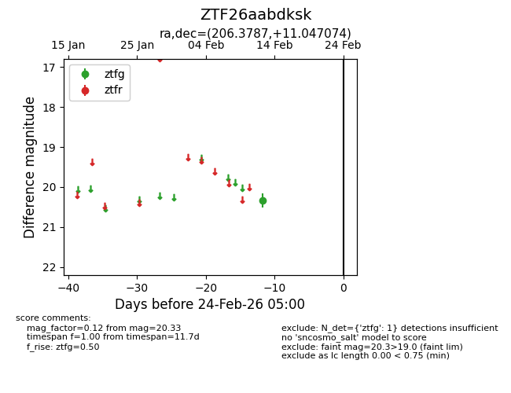
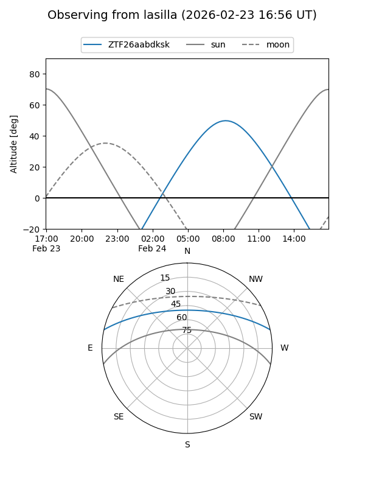
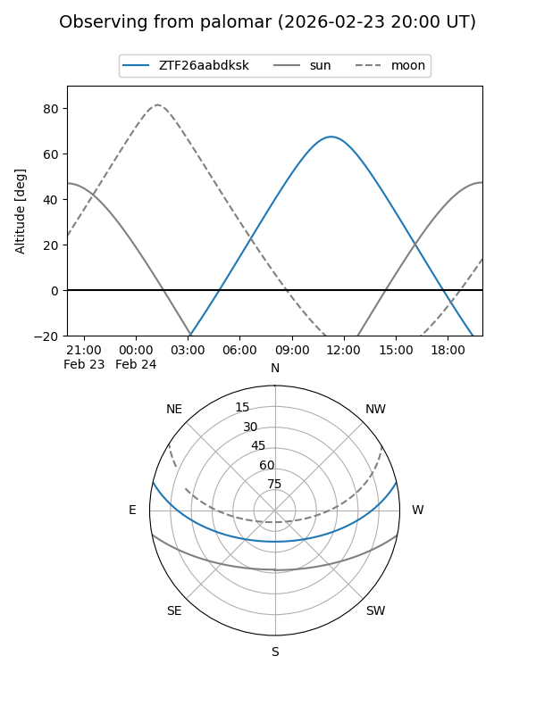

ZTF26aabdksk
Target ZTF26aabdksk at 2026-02-24 09:08
Aliases and brokers:
FINK: link
Lasair: link
ALeRCE: link
alt names
ZTF26aabdksk (ztf,fink_ztf)
Coordinates:
equatorial (ra, dec) = 206.3787,+11.04707
equatorial (HMS+DMS) = 13:45:30.88,+11:02:49.47
galactic (l, b) = (343.8612,+69.49916)
Flags:
Photometry:
last ztfg=20.33
1 ztfg detections
Lightcurve

Visibility


Additional plots